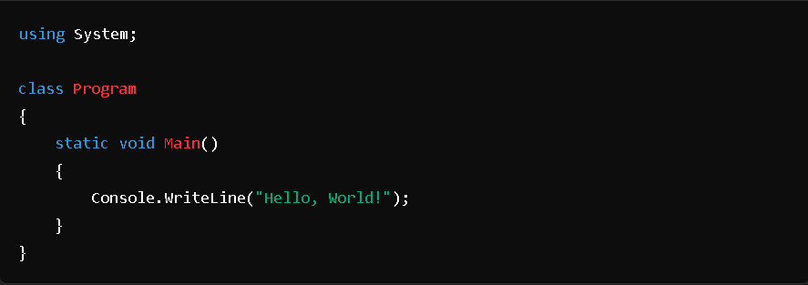
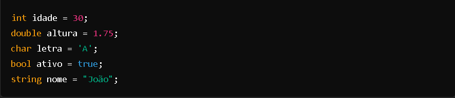
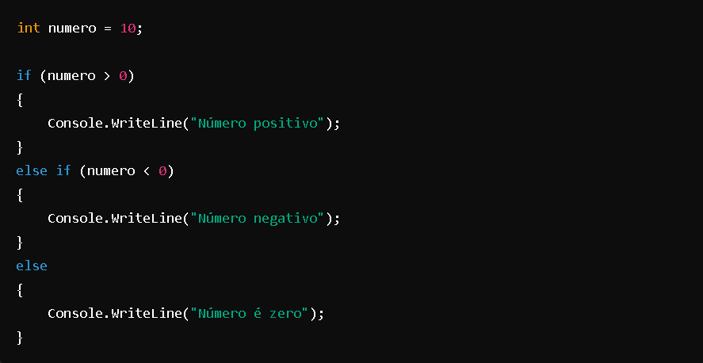
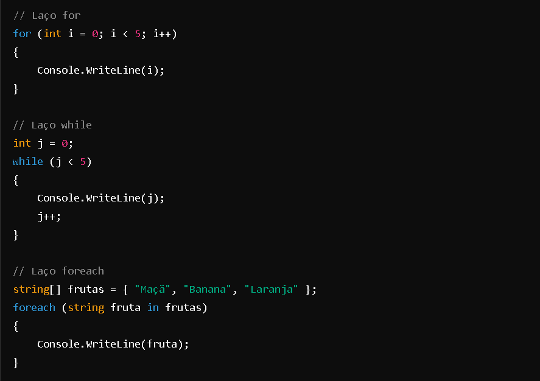
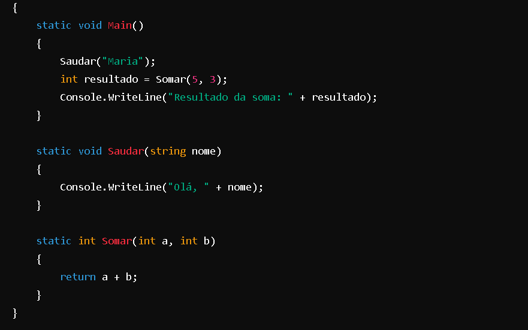
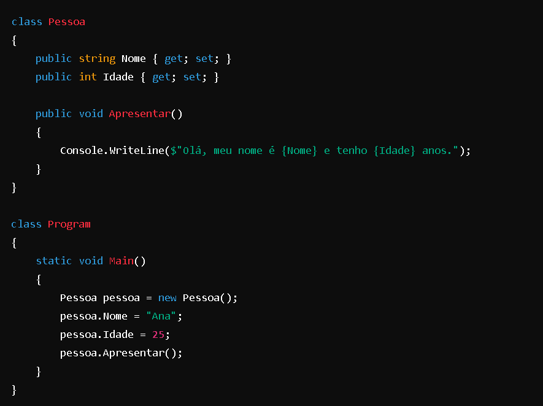
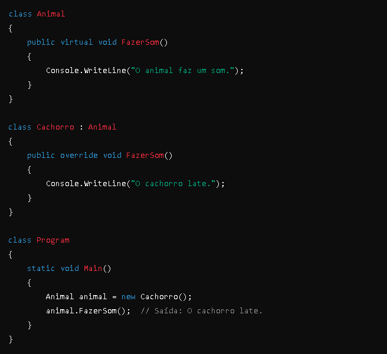
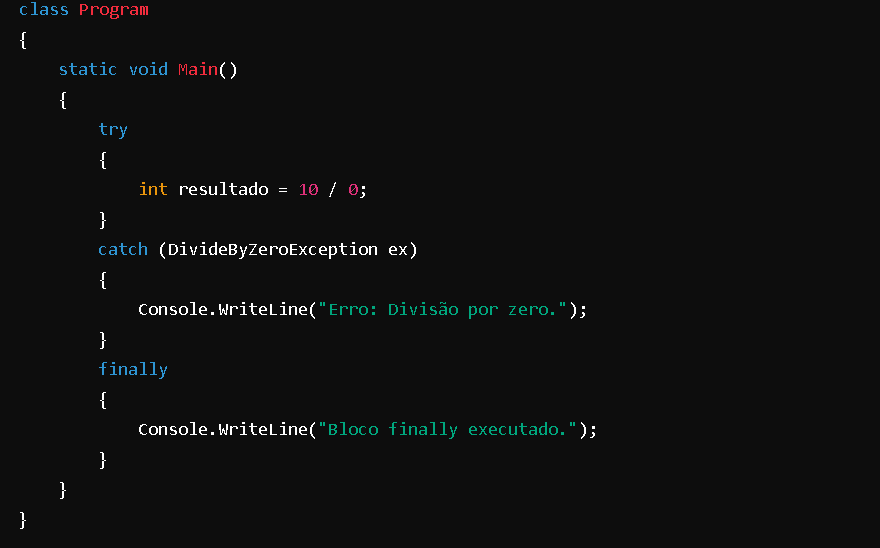
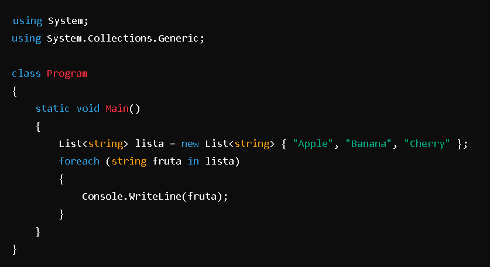

C # -
1. História e Evolução
Lançamento Inicial: C# foi lançado pela primeira vez em 2000,
como parte da plataforma .NET Framework da Microsoft. O objetivo era
criar uma linguagem que fosse simples, moderna e com características de
segurança e eficiência.
Versões: A linguagem evoluiu com o tempo, incorporando novos recursos
e melhorias. Versões notáveis incluem C# 2.0, que introduziu generics e
tipos anônimos; C# 4.0, que trouxe suporte para programação dinâmica e
argumentos nomeados; e C# 9.0, que trouxe registros e padrões de correspondência.
2. Características da Linguagem
Orientada a Objetos: C# é uma linguagem orientada a objetos, o que significa que ela
usa classes e objetos para organizar o código e promover a reutilização e a
modularidade.
Tipagem Estática e Segura: C# é fortemente tipada e estaticamente tipada, o
que ajuda a detectar erros em tempo de compilação e contribui para um código
mais seguro e robusto.
Gerenciamento de Memória: C# utiliza um coletor de lixo (garbage collector)
para gerenciar a memória, o que ajuda a evitar vazamentos de memória e simplifica a
programação.
3. Ecosistema e Plataformas
.NET Framework e .NET Core: C# é tradicionalmente associado ao .NET Framework,
mas também é totalmente compatível com .NET Core, que é uma versão multiplataforma
do .NET Framework. A mais recente evolução é o .NET 5 e .NET 6, que unificam .NET
Framework e .NET Core em uma única plataforma.
Desenvolvimento de Aplicações: C# é amplamente utilizado para o desenvolvimento de
uma variedade de aplicações, incluindo aplicações desktop (com Windows Forms e WPF),
aplicações web (com ASP.NET), e aplicações móveis (com Xamarin). Além disso, também
é usado para desenvolvimento de jogos com Unity.
4. Recursos Avançados
LINQ (Language Integrated Query): LINQ permite realizar consultas diretamente no
código C#, o que facilita a manipulação de dados em coleções e bancos de dados.
Asynchronous Programming: C# possui suporte robusto para programação assíncrona
com async e await, que facilita a escrita de código que é mais eficiente e responsivo.
Expressões Lambda e Delegates: C# suporta expressões lambda e delegates, que permitem
a criação de métodos inline e programação funcional.
Programação de Padrão e Reflexão: A linguagem suporta programação com padrões e
reflexão, permitindo a análise e a manipulação de tipos em tempo de execução.
5. Comunidade e Suporte
Documentação e Recursos: A Microsoft oferece uma vasta documentação e uma rica
biblioteca de recursos para aprender e utilizar C#. Existem também muitos tutoriais,
fóruns e comunidades online onde desenvolvedores podem trocar conhecimentos e
solucionar problemas.
Suporte Multiplataforma: Com a evolução para o .NET Core e agora o .NET 6, C# passou
a oferecer suporte a desenvolvimento em várias plataformas, incluindo Windows, Linux
e macOS.
6. Integração com Outras Tecnologias
ASP.NET: Para desenvolvimento web, C# é frequentemente usado com ASP.NET para
construir sites e serviços web.
Xamarin: Para desenvolvimento móvel, C# pode ser utilizado com Xamarin para criar
aplicativos para iOS e Android com uma base de código única.
Unity: C# é a principal linguagem de programação utilizada no motor de jogos Unity,
uma das ferramentas mais populares para desenvolvimento de jogos.
1. Estrutura Básica de um Programa
Um programa C# típico é estruturado em classes e métodos. O ponto de entrada de um
programa C# é o método Main.

2. Variáveis e Tipos de Dados
C# é uma linguagem fortemente tipada, o que significa que você deve declarar o tipo das variáveis. Aqui estão alguns tipos básicos:
Inteiros: int, long, short, byte
Ponto flutuante: float, double
Caracteres: char
Booleanos: bool
Strings: string
Exemplo de declaração e inicialização:

3. Controle de Fluxo
Os principais conceitos de controle de fluxo em C# incluem:
Condicionais: if, else if, else, switch

Laços de Repetição: for, while, do-while, foreach

4. Métodos
Métodos são blocos de código que realizam uma tarefa específica e
podem ser chamados a partir de outros métodos.

5. Classes e Objetos
C# é uma linguagem orientada a objetos, o que significa que você pode criar e
manipular objetos que são instâncias de classes.

6. Herança e Polimorfismo
C# suporta herança e polimorfismo, o que permite que você crie hierarquias
de classes e métodos que podem ser substituídos.

7. Tratamento de Exceções
O tratamento de exceções em C# é feito usando try, catch, finally e throw.

8. Coleções e Generics
C# fornece várias coleções para armazenar dados, como List
